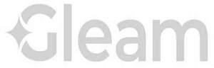

Trade Mark Journal No.2025/036 5 September 2025
UK00004228656 3 July 2025 (5,10,11,21,35,44)
Mark 1
Mark 2

- Class 5
- Toothpaste, fluoride toothpaste, sensitivity relief toothpaste, enamel repair toothpaste, whitening toothpaste, mouthwash, gum health rinse mouthwash, medicated mouthwash, breath spray (anti-bacterial), dental whitening pens with active ingredients, dental whitening gel refills, bad breath treatment kits, anti-plaque dental products, anti-tartar dental products, dental whitening treatments for in-chair use (for dental professionals), lip balm.
- Class 10
- LED dental whitening devices, rechargeable oral tools, rechargeable dental tools, blue light dental mouthpieces, ultraviolet dental mouthpieces, dental travel kits with electronic components, oral irrigators, dental oral care devices for professional use (in clinics or pop-ups), charging bases and accessories for all the aforesaid goods.
- Class 11
- Ultraviolet toothbrush sterilisers.
- Class 21
- Toothbrushes, sonic toothbrushes, LED dental whitening devices, rechargeable oral tools, rechargeable dental tools, smart dental brushing and cleaning tools, smart dental brushing and cleaning tools with timers or sensors, dental travel kits with electronic components, dental water flossers, oral irrigators, charging bases and accessories for all the aforesaid goods; Toothbrushes, dental whitening trays, bamboo toothbrushes, dental floss and floss picks, interdental brushes, dental whitening applicators, spatulas or brushes for dental gels, mouth mirrors, tongue scrapers, portable toothbrush caps and cases, toothbrush holders, reusable dental rinse cups, non-powered breath freshening tools, glass containers or jars for oral care products.
- Class 35
- Retail of products through online marketplaces; Online retail of oral care products, , Marketing and advertising of oral health products, Sale of products directly to consumers via a website or online portal, and through selected wholesale and retail partners both online and in physical stores; Partnerships with creators or influencers for the promotion of products, including the use of affiliate links, discount codes, and other tracked promotional means; Community-based loyalty programs, Pop-up store operation; Distribution of sample products and curated promotional kits to influencers, media, and other partners for marketing and to promote brand awareness; Collaborative marketing campaigns conducted with other wellness or beauty brands,including bundled offers or joint giveaways; Licensing or franchising for international retail, Development of sponsored or paid-for promotional content in partnership with influencers or creators to showcase, advertise and/or market goods and services; Product partnerships co-created with selected influencers or creators, including exclusive designs or bundles; Campaigns that incorporate User-Generated Content or product gifting to customers and creators to encourage organic brand advocacy.
- Class 44
- Subscription-based oral care services; In-chair dental whitening services, Mobile or pop-up dental whitening treatment stations, Cosmetic dental consultations and treatments, Smile assessments, At-home dental treatment bookings, providing dental Product application guidance from trained professionals, Collaborations with dental clinics or wellness centres, dental Whitening preparation and aftercare services, Smile makeover bundles (multi-brand), Remote oral health coaching, Subscription-based dental “whitening top-up” service with check-ins.
GN COMMERCE LIMITED
Representative: Dolleymores